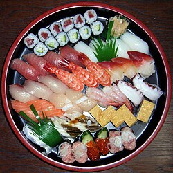
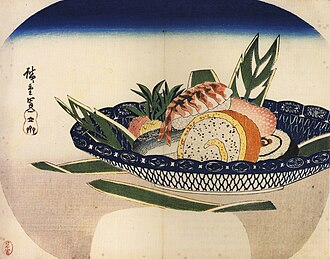
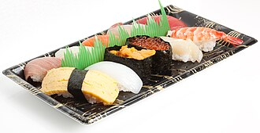
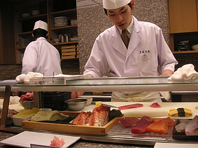
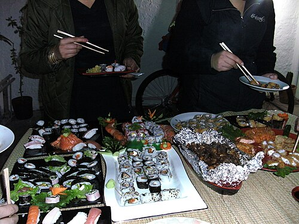
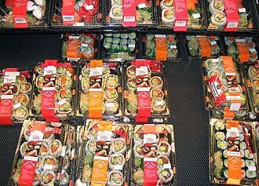

Ver artigo principal : História do sushi
Sushi
Sushi (すし, 寿司, 鮨; pronunciado [sɯꜜɕi] ou [sɯɕiꜜ]) é um prato da culinária japonesa que possui origem numa antiga técnica de conservação da carne de peixe em arroz avinagrado. O sushi, na forma em que é conhecido atualmente, tem cerca de 200 anos; inicialmente, era vendido em barracas, como comida de rua, numa espécie de fast food.
O sushi, tradicionalmente, é feito com arroz temperado com molho de vinagre, açúcar e sal, combinado com algum tipo de peixe ou fruto do mar, vegetais ou ovo. A tradição japonesa é de servi-lo acompanhado de wasabi (pasta de raiz forte).

História
A forma tradicional do sushi é peixe fermentado e arroz, conservados com sal, em um processo originário do Sudeste Asiático, onde ainda continua popular nos dias de hoje.
O termo sushi vem de uma forma gramatical arcaica, com significado de "Risoto Japonês", não usada mais em outros contextos e significa, literalmente, "é azedo", num reflexo das suas raízes históricas de alimento fermentado.
A ciência por trás da fermentação do peixe embalado no arroz é que o vinagre produzido a partir da fermentação do arroz quebra a proteína do peixe em aminoácidos. Isso resulta em um dos cinco paladares básicos, chamado umami em japonês. A forma mais antiga de sushi no Japão, narezushi, ainda se assemelha muito com esse processo. No Japão, o narezushi evoluiu para oshizushi e, por último, para edomae nigirizushi, que é o alimento conhecido mundialmente apenas como "sushi".
Atualmente, o sushi japonês preserva poucas semelhanças com o tradicional prato de arroz lactofermentado. Originalmente, quando o peixe fermentado era tirado do arroz, apenas o peixe era consumido e o arroz fermentado era descartado. O funazushi de gosto e cheiro fortes, um tipo de narezushi feito próximo ao lago Biwa, no Japão, é o que mais lembra a forma tradicional de preparação do sushi fermentado.

Iniciando-se no período Muromachi (1336-1573), o vinagre foi adicionado à mistura peixe-arroz, para dar um melhor paladar e conservação. O vinagre acentuava o azedume do arroz, aumentando seu tempo de conservação e permitindo que o processo de fermentação encurtasse, acabando por ser abandonado na preparação do prato. Nos séculos seguintes, o sushi de Osaka evoluiu para o oshi-zushi. Frutos do mar e arroz eram prensados usando-se uma esteira de bambu. Em meados do século XIII, essa forma de preparação chegou a Edo (a atual Tóquio).
A versão contemporânea, internacionalmente conhecida apenas por sushi, foi desenvolvida por Hanaya Yohei (華屋与兵衛; 1799–1858) no final da era Edo. Essa técnica era uma forma primitiva de fast-food que não era fermentada, pois era preparada rapidamente, e que podia ser comida em bancas armadas na rua ou em teatros.[2] Nessa época, esse tipo de sushi ficou conhecido como edomae zushi, pois era produzido com peixes frescos pescados em Edomae (a atual Baía de Tóquio). Apesar de hoje em dia os peixes não virem mais desse lugar, o sushi ali produzido ainda é formalmente conhecido como edomae nigirizushi.

Nutrição
Os principais ingredientes do sushi tradicional, peixe cru e arroz, possuem baixas taxas de gordura, altas taxas de proteína, carboidratos, vitaminas, minerais e omega-3 (nos sushis com peixe). O mesmo não ocorre com o sushi no estilo ocidental, que adiciona, cada vez mais, ingredientes não tradicionais, tais como maionese, abacate e creme de queijo.
Peixe, tofu, frutos do mar, ovo e muitos outros recheios usados no sushi possuem alto nível proteico. Vitaminas e minerais são encontrados na maioria dos vegetais e dos frutos do mar usado no sushi. Carne de camarão, por exemplo, é rica em cálcio e iodo, enquanto carne de salmão é rica em vitamina D. Gari e nori, usados para fazer o sushi, são ricos em nutrientes. Outros vegetais embrulhados junto com o arroz também oferecem várias outras vitaminas e minerais. Carboidratos são encontrados no arroz e nos vegetais.
Arroz Culinária Japonesa

| Item | Quantidade | % VD |
|---|---|---|
| Valor Energético | 173 Kcal = 728 kJ | 9% |
| Carboidratos | 39g | 13% |
| Proteínas | 3,5g | 5% |
| Gorduras Totais | 0g | 0 |
| Gorduras Saturadas | 0g | 0 |
| Gorduras Trans | 0g | Valor não significativo. |
| Fibra Alimentar | 0,8g | 3% |
| Sódio | 6,0mg | 0 |
| Não contém glutén. | Fonte Blue Ville | |
O Arroz Blue Ville Culinária Japonesa é especial para sushi.
É um arroz de grão curto, muito popular entre a colônia japonesa justamente por formar a liga certa para as inúmeras receitas onde é utilizado. O Arroz Blue Ville para Culinária Japonesa é ingrediente básico para quem quer fazer, entre outros pratos típicos, sushis, takikomi-goham (arroz com frango e legumes) e aomame-gohan (arroz com ervilhas) sem erros.
O Arroz Blue Ville Culinária Japonesa pode ser encontrado em pacotes de 1Kg.
Curiosidades
Dizer que o arroz é a base da culinária no Japão não é
exagero. Lá, ele é consumido no café da manhã, almoço, jantar
e entre as refeições também.
Riscos de saúde
Como muitos alimentos que utilizam frutos do mar e peixes, o sushi não está livre de riscos de saúde. Alguns peixes grandes, como atum (especialmente rabilho), pode estar contaminados com altos níveis de mercúrio. Isso se deve ao fato de o atum estar no topo de sua cadeia alimentar: logo, ele acumula a contaminação dos peixes menores quando os consome. Assim, o atum, e outros peixes podem causar intoxicação por mercúrio se consumidos em alta quantidade.
Infecções por parasitas são raras. Os japoneses costumam congelar à noite todos os peixes antes de os comer para evitar serem infectados por parasitas, particularmente o anisakis.
Também é de se considerar os riscos de reações alérgicas aos frutos do mar ou aos temperos utilizados.
Uma outra preocupação é a contaminação por bactérias, principalmente da família dos coliformes, pois é tradicional o prato se preparar com as "mãos nuas", pois, segundo os puristas, o uso de luvas ou a lavagem das mãos com detergentes bactericidas altera o sabor do sushi. Existindo, ainda, como fontes de contaminação, o armazenamento dos ingredientes, a limpeza do local onde é preparado, bem como a limpeza dos utensílios utilizados. Os males variam desde uma indigestão leve até, em casos mais graves, complicações como diarreia, úlceras e até mesmo o óbito.
Outras formas de sushi, mais notavelmente as que usam peixes venenosos (como Tetraodontidae), podem causar graves envenenamentos se não forem devidamente preparadas. O fugu, particularmente, tem uma dose letal de tetrodotoxina em seus órgãos internos e precisa ser preparado por um cozinheiro licenciado e qualificado por um exame nacional do Japão.

Apresentação
Tradicionalmente, o sushi é servido no estilo minimalista e geométrico japonês, em bandejas de plástico ou madeira, dependendo das qualidades estéticas do local.
Muitos restaurantes de sushi oferecem pratos com preços fixos escolhidos pelo chef dependendo do dia. Alguns desses pratos são classificados como: shō-chiku-bai (松竹梅), shō/matsu (松, pine), chiku/take (竹, bamboo) ebai/ume (梅, ume), sendo o matsu o mais caro e o ume o mais barato.
No Japão, e cada vez mais no exterior, o sushi é servido na forma conhecida como kaiten zushi, um estilo de fast-food japonês no qual os pratos são dispostos em balcões giratórios pelo qual os pratos passam e onde as pessoas podem se servir. Nesse sistema, os preços são definidos pela cor dos pratos no qual os alimentos estão. No final da refeição o atendente calcula o valor da conta pelo número de pratos sobre a mesa do cliente e suas cores. Restaurantes mais modernos colocam chipes de RFID nos pratos para se calcular automaticamente a conta.

Tipos de sushi
O ingrediente comum em todos os diferentes tipos de sushis é o arroz de sushi. A variedade aparece na escolha dos recheios e coberturas, na escolha de outros condimentos e na maneira em que são montados. Os mesmos ingredientes podem ser montados de formas inteiramente diferentes para a obtenção de efeitos totalmente diferentes. Esta seção lista as diferentes formas de construir o sushi, independentemente dos tipos de recheio e cobertura.
-
Makizushi (巻き寿司; lit. "sushi enrolado") ou norimaki (海苔巻き;
lit. "rolo de nori", também utilizado para designar outros pratos)
é um pedaço cilíndrico, formado com a ajuda de uma esteira
enrolável de bambu, chamada makisu ou sudare. O makizushi é
geralmente embrulhado em nori, uma folha de alga marinha
desidratada que abriga o arroz e o recheio.
- Futomaki (rolinhos grandes). 太巻き. Cilíndrico e grande, é um dos sushis mais populares. Possui como recheio uma variada combinação de peixes, folhas e raízes. Tendo tradicionalmente recheios ímpares, é um dos mais apreciados em festivais e datas comemorativas.
- Hosomaki (rolinhos finos). 細巻き. Um pedaço cilíndrico fino, com o nori na parte externa. O hosomaki típico tem por volta de dois centímetros de espessura e dois centímetros de largura. Eles são geralmente feitos com apenas um recheio, simplesmente porque não há espaço suficiente para mais de um.
- Kappamaki. 河童巻き. Hosomaki recheado apenas com pepino em tiras é um dos mais tradicionais sushis. Foi batizado dessa forma em homenagem ao Kappa, figura folclórica japonesa, que tinha o pepino como seu alimento preferido.
- Tekkamaki. 鉄火巻き. Tendo, como recheio, o atum, é uma das variantes mais conhecidas de hosomaki.
- Temaki (rolinhos de mão). 手巻き. Um pedaço grande em formato de cone, com o nori na parte externa e os ingredientes até à boca da extremidade larga. Um temaki típico tem por volta de dez centímetros de comprimento, e é comido com as mãos, já que é muito estranho pegá-lo com palitinhos.
- Uramaki (enrolado ao contrário). 裏巻き. Um pedaço cilíndrico médio, com dois ou mais recheios. Uramaki diferencia-se dos outros maki porque o arroz está na parte externa e o nori na interna. O recheio fica no centro, rodeado por uma camada de nori, uma camada de arroz e uma cobertura de outro ingrediente, como ovas de peixe ou sementes de gergelim torradas. No Japão, "rolo invertido" seria, na verdade, gyakumaki.
- Oshizushi (sushi prensado). 押し寿司. Um pedaço em forma de bloco usando um molde de madeira, chamado oshibako. O chef alinha o fundo do oshibako com a cobertura, cobre-o com arroz de sushi e pressiona a tampa do molde para baixo para criar um bloco compacto e retilíneo. O bloco é removido do molde e cortado em pedaços que cabem na boca.
-
Nigirizushi (sushi feito à mão). 握り寿司. Pequenos pedaços
ligeiramente similares ao sushi prensado ou sushi enrolado, mas
feito sem a utilização de makisu ou oshibako. Montar um
nigirizushi é surpreendentemente difícil de fazer da forma
correta. A forma mais simples é um pequeno bloco de arroz de sushi
com uma lasca de wasabi e uma camada fina de uma cobertura
colocada sobre ele, possivelmente amarrada com uma tira fina de
nori.
- Gunkanzushi (sushi "navio de guerra"). 軍艦寿司. Também conhecido como gunkanmaki, é um sushi pequeno, ovalado, similar em tamanho e aparência ao hosomaki. Um punhado de arroz é embrulhado à mão em uma tira de nori, mas, ao invés de o recheio, ficar no centro, tem alguns ingredientes — como ovas de peixe — empilhados no topo.

O sushi Joe é considerado um Gunkan, pois tem salmão picado na faca com maionese como cobertura, mas ao invés da alga, usa-se o salmão envolto no arroz. Cebolinha picada para finalizar.
- Inarizushi (sushi recheado). 稲荷寿司. Um pequeno pacote ou bolsinha cheia de arroz de sushi e outros ingredientes. O pacote é confeccionado de tofu bem frito (油揚げ ou abura age), uma omelete fina (帛紗寿司 ou fukusazushi), ou folhas de repolho (干瓢 ou kanpyo).
-
Chirashizushi (sushi espalhado). 散らし寿司. Uma tigela de arroz
de sushi com outros ingredientes misturados. Também conhecido como
barazushi. ばら寿司.
- Edomae chirashizushi (sushi espalhado no estilo Edo). Ingredientes crus arranjados de forma artística em cima do arroz na tigela.
- Gomokuzushi (sushi no estilo cansai). 五目寿司. Ingredientes cozidos ou crus misturados no meio do arroz na tigela.
- Narezushi (なれ鮨) é uma forma mais antiga de sushi. Um peixe é recheado com sal após seus órgãos e escamas serem removidos. Estes peixes são colocados em um barril de madeira mergulhados em sal e comprimidos com um tsukemonoishi pesado ou uma pedra específica. Eles são fermentados por entre dez dias e um mês. Então esses peixes são colocados na água por entre 15 minutos e uma hora. Os peixes são então colocados em outro barril, encaixados e colocados em camadas com arroz cozido no vapor e peixe resfriados. Então eles são novamente selados de forma parcial com otosibuta e uma pedra específica. Conforme os dias passarem, a água fermentada deve ser retirada. Seis meses depois, esses funazushi podem ser comidos, podendo também durar mais de seis meses.